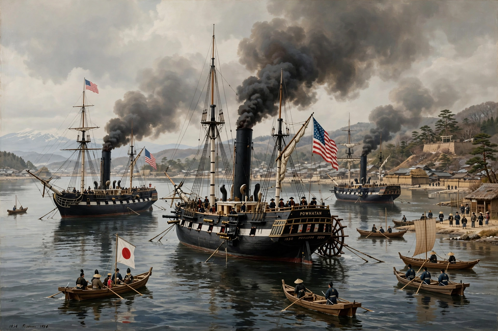

| Convention of Kanagawa | |
|---|---|
| Signed | 31 March 1854 |
| Location | Yokohama, Kanagawa, Japan |
| Parties | United States; Tokugawa shogunate |
| US negotiator | Commodore Matthew C. Perry |
The Convention of Kanagawa (Japanese: 日米和親条約, Nichibei Washin Jōyaku), also known as the Kanagawa Treaty, was signed on 31 March 1854 between the United States, represented by Commodore Matthew C. Perry, and the Tokugawa shogunate of Japan. It ended Japan's more than two centuries of self-imposed seclusion (sakoku) by opening the ports of Shimoda and Hakodate to American vessels.

Perry arrived in Edo Bay in July 1853 with four warships — the "black ships" — bearing a letter from President Millard Fillmore requesting protection for shipwrecked American sailors, supplies of coal and provisions, and eventually trade. He withdrew to China promising to return the next year with a larger squadron, giving the shogunate time to deliberate. When he returned in February 1854 with nine ships, negotiations at Yokohama produced the convention.
The treaty opened Shimoda and Hakodate for supplies and the rescue of castaways, guaranteed humane treatment of shipwrecked crews, and permitted an American consul to reside at Shimoda — a post filled in 1856 by Townsend Harris. It did not yet authorise general trade; that came with the Harris Treaty of 1858, the first of the "unequal treaties" imposed on Japan.
The Convention shattered the Tokugawa order's credibility, fed the sonnō jōi ("revere the Emperor, expel the barbarians") movement, and set in train the crisis that ended with the fall of the shogunate and the Meiji Restoration of 1868.
Matthew C. Perry · Sakoku · Harris Treaty · Meiji Restoration